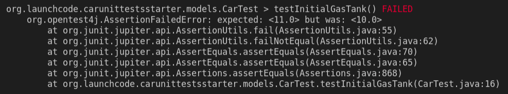
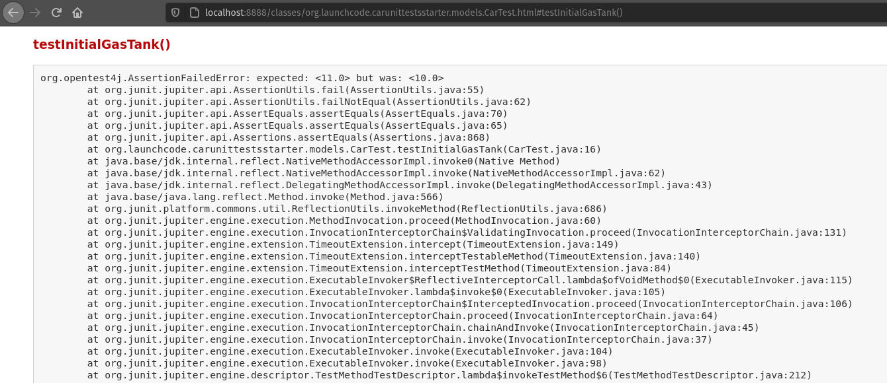
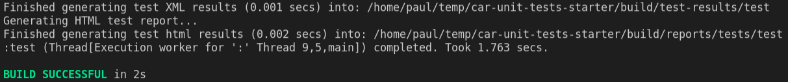
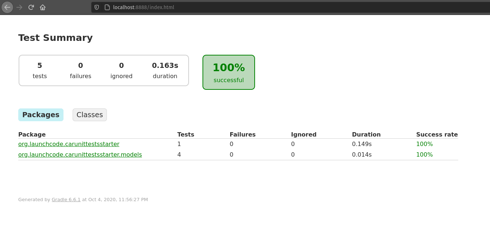

Concept: Unit Testing
A unit is a single, clearly stated behavior. In many cases it will be one method.
A unit test is an automated test that verifies that one unit behaves correctly.
We will be writing unit tests using JUnit 5. Some example code has been provided for us. We will be writing unit tests for the code that currently exists and adding functionality if necessary.
Write and Run our Unit Tests
Using the @Test annotation we will be writing unit tests around a Car’s gas tank level.
As a best practice in Java we will put our unit tests in a models/ directory in our testing root. Take note of the provided /src/test/java/org/launchcode/carunittestsstarter/models/CarTest.java class where we will be writing the unit tests for the Car.java class.
Test Initial Gas Tank Level
This first test ensures the behavior of the Car constructor method. Usually you wouldn’t test a constructor method, however in this case our constructor does something unusual: it sets the property gasTankLevel to match the property gasTankSize.
Since this behavior is out of the normal for a constructor we should write a test for it:
@Test
public void testInitialGasTank() {
Car testCar = new Car("Toyota", "Prius", 10, 45);
assertEquals(10, testCar.getGasTankLevel());
}
We can run our test by utilizing the gradle wrapper and the command:
hint
The -i flag will print out any failing tests to STDOUT in our terminal. This will allow us to skip checking the reports for our test.
If your tests run successfully you will see a success message from gradle. If any of your tests have failed you can view their results in a couple of different ways:
- If you used the
-i flag you can scroll up in the output of the gradle test command
- You can view the report generated by gradle in the directory
project-root/build/reports/tests/test
hint
Gradle automatically generates the reports to be displayed from a web server. You can make these available by running python3 -m http.server 8989 from /build/reports/tests/test and then opening localhost:8989 from a browser.
Failed Test Output STDOUT

Failed Test Output Browser

Successful Test Output STDOUT

Successful Test Output Browser

Test Gas Tank After Driving
Let’s add another test. This time checking the level of the gas tank after driving our car some distance. This will require a bit of basic arithmetic on our part.
@Test
public void testGasTankAfterDriving() {
Car testCar = new Car("Toyota", "Prius", 10, 45);
testCar.drive(45);
assertEquals(9.0, testCar.getGasTankLevel());
}
Test Gas Tank After Exceeding Range
Let’s add another test. This time checking the level of the gas tank after the car has driven slightly beyond its range:
@Test
public void testGasTankAfterExceedingRange() {
Car testCar = new Car("Toyota", "Prius", 10, 45);
testCar.drive(500);
assertEquals(0, testCar.getGasTankLevel());
}
Test Overfill Gas Tank
Finally let’s see how we can expect an error to be raised when our Car model is used incorrectly. Let’s expect an error to be thrown when an amount of gas is added to the car that would exceed the gas tank level.
@Test
public void testOverFillGasTank() {
Car testCar = new Car("Toyota", "Prius", 10, 45);
// testCar.addGas(5.0);
assertThrows(IllegalArgumentException.class, () -> {testCar.addGas(5.0);});
}
In this case we are getting a compilation error because the adGas() method is not recognized. We will need to add this method to our class before we can test it!
public void addGas(double amount) {
if(this.gasTankLevel + amount > this.gasTankSize) {
throw new IllegalArgumentException("Cannot exceed gas tank level");
}
this.gasTankLevel += amount;
}
With this method added to our Car.java class it should fix the error in our CarTest.java file and we should be able to run the test.
Recap
In this article we have learned some of the basics of writing Unit Tests in Java with Junit 5. We can use the @Test annotation to define a new test method in which we can test the behavior of our code. Unit tests are meant to be concise and to ensure the behavior of our models.
To further your knowledge on unit testing with Junit 5 look over the documentation. Pay note to the following annotations that will come in handy throughout this class:
@DisplayName@BeforeEach@AfterEach@BeforeClass@AfterClass
Tomorrow we will look at Integration Testing which moves beyond model behavior and into application behavior.